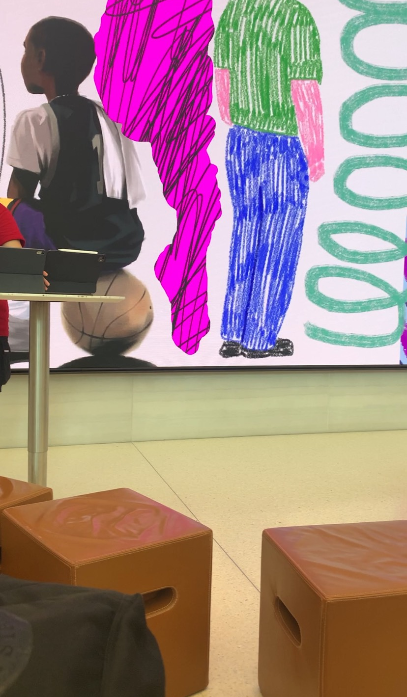
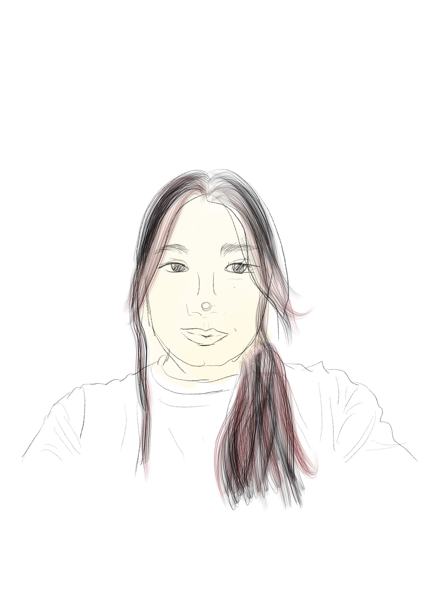
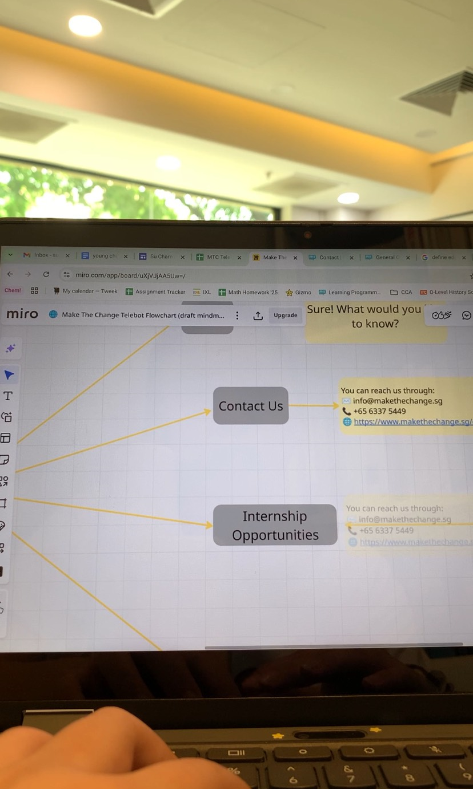

Day 6 – 1st December, 2025



09:30 - 15:30
I started the day by drawing a flowchart for the telebot Make the Change is creating. It was a bit tough because I have never really conversed with a telebot. Nonetheless, it wasn't the hardest to form automated responses or brainstorm FAQs people might have about Make the Change. Later in the afternoon, we went to Apple @ Orchard for a quick 1 hour course, where I learned quite a lot about Procreate and features of the Apple Pencil. Lastly, but most importantly, I got closer to Ms Nabilah and Miru, another intern, and it was really fun getting to know them, as well as sharing SEVERAL fun moments with them.